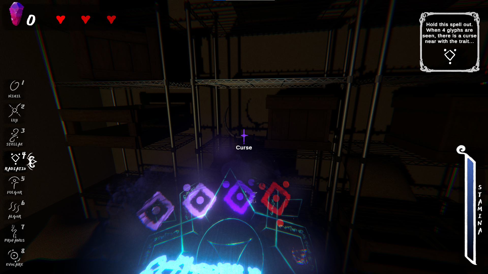
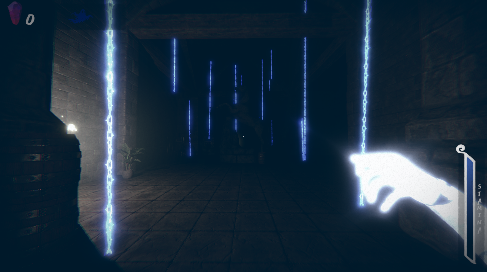
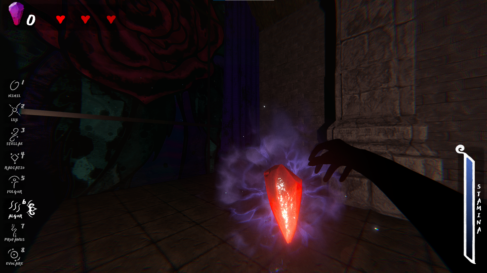
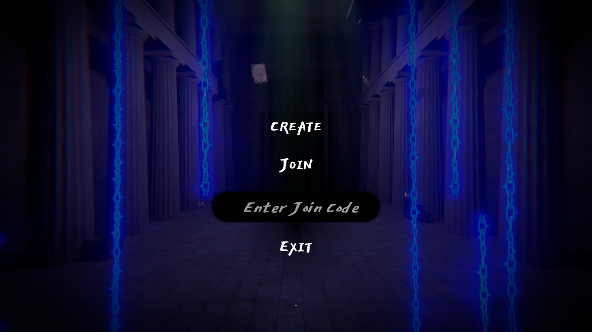
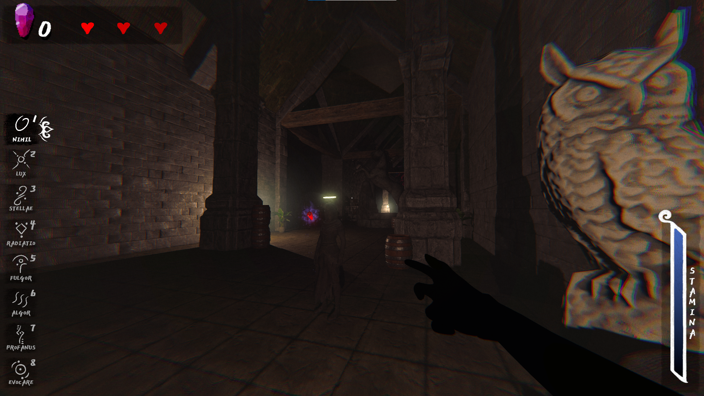
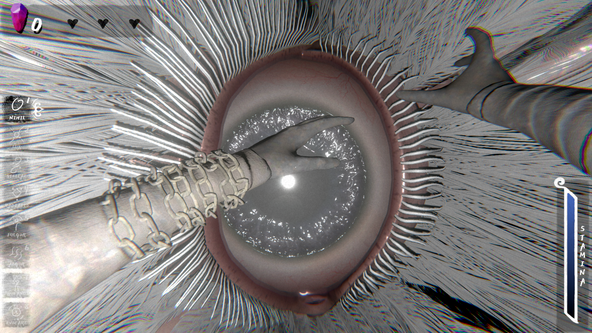

FEATURED PROJECT · IN PROGRESS
CURSEBREAKERS
An investigative multiplayer horror game where players uncover and destroy curses while evading hostile ghosts. The experience blends the supernatural power of an angelic protagonist with the methodical problem-solving of detective work. Players use specialized tools to gather clues, locate each curse, and destroy it.
Project Overview
In Cursebreakers, players take on the role of an angel in training after dying unexpectedly. They investigate locations haunted by murder victims, uncover the curses binding the ghosts to the world, and destroy those curses to help the spirits move on to the afterlife. Players can play with friends, load into different locales of varying difficulty, and earn currency for cosmetic alterations to their character.
My Role
I worked on gameplay systems and player abilities, multiplayer features and Dissonance audio integration, tools and gameplay polish, and 3D environments designed to support a creepy, immersive atmosphere.
Design & Development
Cursebreakers draws inspiration from popular multiplayer horror games such as Phasmophobia, R.E.P.O., and Lethal Company. It builds tension through eerie ambience, disorienting environments, paranormal events, and ghost encounters. I also designed and developed the player’s abilities, including the angelic powers used to track down and destroy each curse.
Challenges & Outcomes
The biggest challenge so far in Cursebreakers's development has been building multiplayer systems. When I first started making Cursebreakers, I made it in a single-player format. Because of that, much of the game systems were not designed to be converted over to a multiplayer format, as that was not what was in mind when they were built. It has been a great yet rewarding challenge to both learn multiplayer systems in Unity and also rewire my thinking/code to this new format.
MEDIA
Project Gallery







